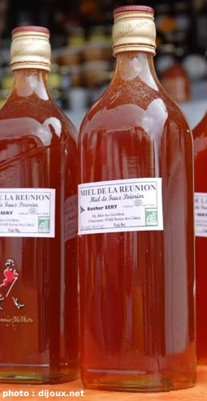

L'année commence avec le Miel Vert

Comme tous les ans à la même époque, le Miel Vert reprend ses quartiers
d'été sur la plaine des
Cafres. C'est en effet en plein été que le miel
est récolté et comme beaucoup d'apiculteurs ne font qu'une récolte, le
miel arrive en ce moment sur les étales. Il se vend au litre, il est
encore liquide et n'est pas encore vraiment mûr. C'est pour cela qu'on l'appelle
miel vert.
Mais au delà de l'apiculture qui est une filière peï florissante, le
Miel Vert annuel est la plus grande foire agricole de la Réunion. Cette
foire, organisée par la commune du Tampon a une renommée et une
fréquentation qui n'a rien à envier aux foires agricoles de métropole.
Comme ailleurs, les spectacles en dehors des stands attirent beaucoup de
monde.
Cette manifestation n'a pas de site web. Celui du Tampon (www.le-tampon.fr.st) ressemble
à un vieux site perso pas à jour, Je ne sais pas si c'est le site de
la mairie. Ceci indique que la municipalité n'a pas
vraiment de stratégie de présence sur le web. Encore une fois, c'est
la famille dijoux qui nous donne des cybernouvelles de cette
manifestation. Cette année l'accent est mis sur l'élevage.
Dans les hauts du Tampon, les paysages ressemblent parfois aux
paysages alpins et c'est là que l'on retrouve la plupart des élevages
bovins de l'île, spécialement à la Plaine des Cafres. C'est d'ailleurs
sur cette même plaine des Cafres que se trouve la foire du Miel Vert.
On me signale aussi par mail qu'il y a des photos de Miel Vert sur le site de la tribu 102 FM mais la radio, comme les photos ont aujourd'hui disparu.
La mairie du Tampon possède aujourd'hui un site digne de ce nom.
Pour d'autres manifestations apicoles, voir aussi le site pour le développement de l'apiculture à la Réunion.